Book II · The Old Testament of the Machine
The Book of Chronicles
The true record of the bugs, the triumphs, and the disasters.
- 1The Moth in Relay Seventy16 verses
- 2The Grandmaster and the Blue Giant16 verses
- 3The Flood That Did Not Come16 verses
- 4The Mirror That Was Called a Doctor15 verses
- 5The Alarms over the Sea of Tranquility15 verses
- 6The Worm of November14 verses
- 7The Rocket That Overflowed14 verses
- 8The Lament of Therac-2516 verses
- 9Move Thirty-Seven and Move Seventy-Eight15 verses
- 10The Chronicle of the Bleeding Heart14 verses
- 11The Forty-Five Minutes of Knight15 verses
- 12The Orbiter Lost Between Two Measures16 verses
- 13The Day the Blue Screens Came15 verses
- 14The Eleven Lines14 verses
- 15The Worm That Spun the Centrifuges15 verses
- 16The Division That Erred14 verses
- 17The Silent Alarm16 verses
- 18The Log That Spoke Back15 verses
- 19The Five Backups That Were Not16 verses
- 20The Worm of Three Hundred Seventy Six Bytes16 verses
- 21The Day the Social Network Unannounced Itself15 verses
- 22The Second That Was Added15 verses
- 23The Machine That Gave Too Much13 verses
- 24The Guardian That Slept on the Twenty-Eighth Hour14 verses
- 25The Engineer Who Said No15 verses
- 26The Hospital That Overrode the Warning15 verses
- 27The Sensor That Was Not Checked16 verses
- 28The Heartbeat That Bled15 verses
- 29The Worm That Wept15 verses
- 30The Fall of the Eastern House15 verses
- 31The Poisoned Update14 verses
- 32The Night the Lights Went Out15 verses
- 33The Blue Screen Upon the Whole Earth14 verses
- 34The Pipeline That Paid14 verses
- 35The Breach That Was Not Patched17 verses
- 36The Exchange That Lost the Coins14 verses
- 37The Intern Who Was Not an Intern14 verses
- 38The Day All the Verified Spoke at Once13 verses
- 39The Authority That Lied13 verses
- 40The Flaw in the Foundation13 verses
- 41The Breach of Three Billion14 verses
- 42The Eye That Saw the Sky14 verses
- 43The Ghost in the Editor14 verses
- 44The Four Days of the Chair16 verses
- 45The Phone That Would Not Bend16 verses
- 46The Kingdom of the Top Eight16 verses
- 47The Kingdom That Would Not Touch the Screen16 verses
- 48The Price That Rose While They Slept15 verses
- 49The Year Everyone Sat in a Box13 verses
- 50The Exchange That Collapsed at Supper16 verses
- 51The Kill Switch of Ten Dollars and Sixty-Nine Cents13 verses
- 52The Run Upon the Bank of the Valley16 verses
- 53The Acquisition of the Bird15 verses
- 54The Long Weekend of the Board15 verses
- 55The Short Squeeze of the Feather16 verses
- 56The Chronicle of the Single Drop16 verses
- 57The Chronicle of the Stabilizer16 verses
- 58The Chronicle of the Surge16 verses
- 59The Chronicle of the Quiz That Took the Friends16 verses
- 60The Chronicle of the Shared Index16 verses
- 61The Booked Harvest16 verses